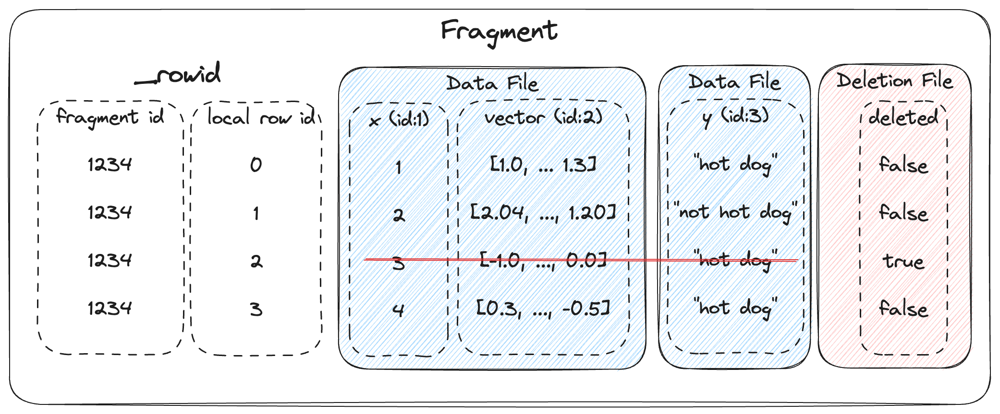

AI时代的多模态列式存储——LanceDB技术概览
特别说明：本文所讨论的技术设计均基于Lance v2和Lance v2.1
在从Parquet到Arrow——列式存储概览一文中，我们回顾了过去十余年主流的开源列式存储格式。正如前文所述，数据存储的发展始终顺应着上层应用I/O模式的变迁。近年来，随着AI技术的爆发式发展，我们迎来了比大数据时代还“大”的AI时代，对数据I/O的需求也随之发生深刻变革。这使得原有的列式存储方案在某些场景下面临新的挑战。LanceDB应运而生，旨在应对这些挑战。本文将对LanceDB进行技术概览，探讨AI时代数据I/O面临的新问题，以及LanceDB的解决之道。
LanceDB是什么？
LanceDB的愿景是为AI时代构建统一的数据湖平台，满足多模态数据的管理需求。随着AI时代的到来，图像、视频和音频等多模态数据的数据量及其访问需求急剧增长。然而，传统数据湖解决方案在高效管理这类数据时面临挑战，迫使相关企业不得不维护多个独立的数据系统，并通过构建复杂的数据交互链路来勉强支持多种模态数据的管理，效率低下。LanceDB正是在此背景下诞生，旨在弥补传统数据湖在多模态数据管理上的不足，为AI场景下的复杂数据提供统一高效的管理平台。
LanceDB构建在其开发的新型开源列式存储格式Lance之上，它高效管理多模态数据的能力正得益于Lance格式的针对性设计。如图1所示，Lance格式兼具了数据格式（Data Format）层和表格式（Table Format）层的特性，与传统Parquet/ORC数据格式和MetaStore/Iceberg表格式的单一层级功能有着本质区别。Lance格式不仅保持了高效扫描访问性能，还支持快速随机点查询。同时，它在添加新数据列时无需复制旧数据，实现了真正的Zero-cost Data Evolution特性。这些独特的特性和优势使Lance格式能够充分适应AI时代的数据负载需求，也支撑LanceDB成为当前领先的多模态数据湖平台解决方案。
AI工作负载的特点
再次强调，存储设计必须基于上层负载的访问模式进行。在开始后续的技术探讨之前，让我们先分析一下现代AI工作负载的特征及其遇到的问题。
大量的点查询
点查询指单次请求仅访问少量数据行的查询操作。当借助二级索引执行此类查询时，目标数据行往往呈离散分布，不属于同一个Page。对于AI工作负载来说，无论是训练阶段还是推理阶段，数据搜索都是常用且重要的过程。为此，LanceDB从设计之初即定位为一个支持多样化搜索的向量数据库，例如语义搜索（Semantic Search）与全文本搜索（Full Text Search, FST）是其支持的核心搜索方式。这些搜索过程在底层最终都会转化为点查询操作，可想而知点查询是LanceDB无可避免的主要查询方式。
然而，传统 Parquet 格式在处理点查询时存在显著瓶颈，主要原因可归结为以下两方面：
海量随机I/O带来的效率困境：点查询会触发大量的随机I/O请求，这种访问模式对存储系统极不友好。尤其对于当前主流的、基于 S3 等云存储构建的数据湖架构而言，其有限的IOPS能力难以高效应对此类海量随机I/O负载。
缺乏“可切片性”导致的冗余读取：更深层次的原因在于，Parquet 的数据编码设计本身不具备“可切片性”，即它无法单独提取并解码目标数据片段。为了成功解码所需数据，系统不得不读取目标数据所在的整个Page甚至Column Chunk。这种必须读取冗余大块数据的机制，在面对仅需少量数据的点查询时，必然会显著增加处理延迟和I/O开销。
宽列
传统的大数据工作负载通常处理的是结构相对简单、尺寸较小的数据列，例如整数、浮点数或长度有限的字符串等基础数据类型。即使是其中最大的字符串，其尺寸通常也处于可控范围。然而，当下以AI工作负载更关注图像、音频、视频等多模态数据。这些工作负载往往将多模态数据的语义嵌入向量（如4KB大小的CLIP embeddings）甚至是原始数据本身作为单独的列进行存储。这导致了“宽列”的形成。
在传统的Parquet格式下，宽列的存在使得Row Group大小的设置面临两难困境： 1. 若采用较小的Row Group Size以降低单个Row Group的数据量：一方面，元数据开销必然增加，从而影响性能；另一方面，与宽列关联的窄列数据量会变得极小，可能被放入远小于文件系统最佳读取尺寸的Page中，导致I/O效率低下。 2. 若维持较大的Row Group Size以避免上述问题：一方面，Parquet Writer在写入数据时需要消耗大量内存资源进行缓冲；另一方面，由于当前主流Parquet Reader如pyarrow）以Row Group为并行单元处理数据，读取过程同样会占用大量内存。
宽表
特征工程作为AI工程的核心环节，会从原始数据中提取大量特征（通常多达数千个）。这使得许多AI工作负载拥有极其宽泛的数据模式（Schema），即数据表包含大量数据列。尽管Parquet等列式存储格式提供了强大的列投影功能以最小化数据读取量，但读取时仍需完整加载所有列的模式元数据。这种元数据加载在低延迟场景下会引入显著开销，无法满足性能要求；同时，在跨多个文件缓存此类元数据时，极易造成内存占用激增，严重制约系统性能。
Lance格式
如前所述，Lance格式是支撑LanceDB高效管理和访问多模态数据的关键设计。它融合了传统数据格式与表格式的特性，承担了这两个层级的任务，对这两个层级分别进行了针对性优化。本章将深入解析Lance在数据格式层和表格式层的关键优化设计。
Lance数据格式：摒弃Row Group
传统的列式存储格式（如Parquet和ORC）均遵循PAX存储模型，在数据组织上引入了Row Group和Column Chunk的结构分层，同一Row Group内的每个Column Chunk都包含了相同行数的数据记录。而Lance数据格式的一项核心设计则在于摒弃了Row Group结构，从而获得更高的数据布局灵活性。

Lance实际存储数据的是.lance文件。如图5所示，一个.lance文件主要由三部分组成:
Data Pages：存储实际的列数据。每个Page归属于一个特定的列，而每个列可以包含多个数据页。更进一步地，每个数据页由一系列Buffer构成。
Column Metadata：当前文件下的每个列均有一个Column Metadata来描述属于该列的元信息，例如每个Page所包含的数据行数及其每个Buffer的offser和size。
Footer：包含描述整个文件的全局元信息，例如文件格式版本、总列数、Column Metadata区域的位置等。
通过摒弃Row Group层级的限制，Lance数据格式实现了极高的数据布局灵活性：单个文件可以仅存储数据表的部分列（而非完整列集）；同一文件内不同列可以包含数量不同的Page；并且每个Page本身也可以包含不同行数的数据记录。这种设计的核心优势在于完美规避了传统格式中因宽列与窄列并存而引发的Row Group大小权衡难题，开发者仅需为每个列配置合适的Buffer大小即可。
此外，摒弃Row Group的设计也带来了其它的优化空间，我们将在后续章节中探讨。
Lance数据格式：计算并行性与I/O并行性解耦
顺应着摒弃Row Group的设计，Lance进一步将计算和I/O解耦，提高并行能力。
我们先来看看传统的列式存储读取过程，下面是整个流程抽象出的伪代码：
1 | |
实际实现可能更复杂（例如Page无法独立解码、预取机制等），但以上伪代码揭示了传统架构的两个关键特征：
数据读取流程中的计算（这里特指解码过程）并行性和I/O并行性是紧密绑定的；
数据读取流程的并行度和上层应用所设定的并行程度相关。例如，当上层应用设置了任务并行性度\(X\)（通常和CPU核心数相关），此时\(X\)就是对Row Group的访问并行度。同时涉及的数据列总共有\(Y\)列，那么I/O并行度将为\(X \times Y\)。
同时，我们还需要认识到两个事实：
硬盘的I/O并行度存在上限。当并发I/O请求数量低于该上限时，硬件性能无法被充分利用；而当并发请求数量超出该上限时，请求排队将导致平均I/O延迟上升。
由于不同列的数据类型各不相同，尺寸不一，存储相同行数的数据所需的Page数量在列与列之间也存在差异。
于是，基于上述特征和事实，我们可以去发现传统列式存储读取数据时存在的问题。在后面的场景中，我们数据读取拆解为两个核心阶段：数据I/O和解码计算两个关键过程，其中解码计算按固定行数分批执行。
图6给出了一个数据读取时I/O顺序的示例。假设此时以\(X\)为3、\(Y\)为3的并行度对数据发起访问，由于各列包含的Page数量不同，导致每一轮次发起的I/O请求数量存在差异。如图所示，第一轮I/O因请求数量超过硬盘并行处理能力上限而导致延迟上升；而在第三轮，则因请求数量不足造成硬件性能浪费。
更为关键的是，解码计算的前提是已完成读取的Page包含了各列固定行数批次的数据。即便是最理想的情况，每列至少需要完成一个Page的I/O读取。这意味着在平均情况下，系统必须等\(X \times Y\)（本例中为9）个I/O操作完成才能启动解码。如前所述，由于并发 I/O 请求过多导致的平均延迟大幅提升，会显著推迟解码计算的开始时间，造成 I/O 与计算的重叠不足，最终严重制约数据读取效率。
如图8所示，数据读取效率最优化的关键在于实现 I/O 操作与解码计算的最大化重叠。而要实现这个，只需要按行号顺序访问各列对应的Page（同时控制并发I/O请求数），确保已读取的数据能最大程度地满足即时解码条件，从而实现最优效率。于是，修改图6的数据读取顺序变为图9所示，以行号作为优先级，顺序读取各列Page即可。
基于上述思路，Lance设计了如图10所示的数据读取调度机制：
调度线程（Scheduling Thread）：根据查询任务和文件元数据，确定目标Page，生成对应的I/O请求并提交至I/O调度器，同时向解码线程发起解码请求。
I/O调度器（I/O Scheduler）：按行号顺序调度所有待读取的Page，并根据硬盘性能动态控制并发I/O请求数量。
解码线程（Decoder Thread）：接收已完成 I/O 的 Page 数据，执行解码计算任务。
通过这种设计，Lance 实现了访问过程中数据I/O与解码计算的彻底解耦，有效解决了传统列式存储在数据访问过程中的性能瓶颈，显著提升了整体效率。
Lance数据格式：随机I/O友好的结构编码
Lance表格式：Zero-cost Data Evolution
在表格式层面，Lance依然借助摒弃Row Group所带来的数据布局灵活性，实现了Zero-cost Data Evolution。
在深入探讨该设计点之前，我们先来解释一下什么是数据表的演化。数据表在完成构建后并非是一成不变的，其结构会随着上层应用的运行而动态变化，发生表的垂直增长和水平增长：垂直增长就是数据行的增加，例如在发生订单交易后，我们需要往交易表里添加一行交易记录；水平增长则是数据列的增加，这在特征工程等场景中更为常见，例如为一张文本分析表新增“情绪倾向”的数据列。
问题发生在表的水平增长上。事实上，表结构的水平扩展并非新兴需求——长期运行的系统必然面临新增业务需求，例如电商平台推出下单返现活动时，需在交易表中新增“返现金额”列。由于历史交易记录无需该列数据，为其设置零值默认值是合理方案。在此场景下，理想方案应避免重写数据文件，仅需维护元数据并在查询旧数据时填充默认值。这正是Iceberg等传统表格式采用的标准方案。
然而，AI工作负载对数据演化的要求远不止于此。其新增数据列的操作更为频繁，且通常旨在为所有历史数据添加特征描述（如特征向量）。在传统表格式下，由于Row Group必须包含完整列集，这迫使系统必须复制并重写所有数据文件。这一机制导致数据表演化开销巨大，在宽列存在的场景下更会进一步放大性能影响。
Lance则没有这个包袱了。摒弃Row Group的设计使其摆脱了单个文件必须包含所有数据列的束缚，从而可以采用创新的二维存储布局：将数据按行划分为多个Fragment，每个Fragment内的数据再按列组织为多个独立文件——每个文件包含固定行数的单列或多列数据。当新增数据列时，Lance无需复制或重写任何现有文件，只需单独创建对应的新文件，并可在必要时灵活合并或拆分这些数据文件。（从逻辑结构上看，Fragment和Row Group非常相似）

更进一步地，Lance为数据行删除也进行了轻量化设计。它在每个Fragment内专门维护一个Deletion文件，用于标记每行数据的删除状态。通过这种设计，Lance在删除数据行时仅需更新元数据（Deletion文件），而无需修改实际的数据文件本身。